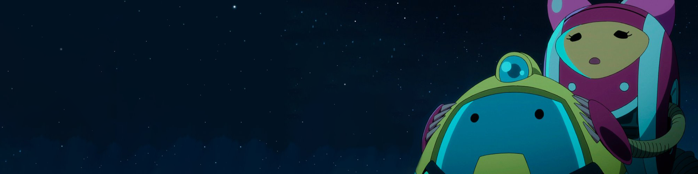

I won't make your fanbase cringe from cultural illiteracy.
Community-first digital strategist specializing in authentic fan engagement for anime and gaming.

Case Study 01 // VIZ Media
Junji Ito Activation
Elevating creator presence into a repeatable content engine by leveraging a powerful, community-driven narrative: the hilarious juxtaposition of Junji Ito's softspoken, personable nature with his harrowing body horror manga.
4.5M+
749K+
52K+
Case Study 02 // Esports
NYXL (Overwatch)
Community-forward content designed for competitive gaming audiences, blending humor, identity, and timely platform moments to keep the fanbase fed.
73K+
Viral
100%

Typical Workflow
1. Community scan: What fans are already saying.
2. Angle selection: Why this matters now.
3. Hook + format choice: What earns attention.
4. Caption voice + CTA: What earns participation.
Availability
Social Media
Mon-Thu: 10:30 AM - 8 PM PST
Fri: All Day
Editing & Design
Mon-Thu: 4 - 8 PM PST
Fri: All Day